目录 一、电阻 二、电位器 三、电容 四、电感 五、二极管 六、三极管 七、轻触按键开关 八、微动开关 九、温度开关 十、继电器 十一、温度保险丝 十二、可控硅 十三、声表面滤波器 十四、桥式整流二极管 十五、光电器件 十六、电子元器件符号图形
一、电阻系列
电阻器（Resistor）是一个限流元件，用字母R来表示，单位为欧姆Ω。将电阻接在电路中后，电阻器一般是两个引脚，它可限制通过它所连支路的电流大小。阻值不能改变的称为固定电阻器。阻值可变的称为电位器或可变电阻器。
电阻元件的电阻值大小一般与温度，材料，长度，还有横截面积有关，衡量电阻受温度影响大小的物理量是温度系数，其定义为温度每升高1℃时电阻值发生变化的百分数。电阻的主要物理特征是变电能为热能，也可说它是一个耗能元件，电流经过它就产生内能。实际器件如灯泡，电热丝等均可表示为电阻器元件。
电阻在电路中通常起分压、分流的作用。对信号来说，交流与直流信号都可以通过电阻。
↓图1、9 普通电阻；图2 电阻排；图3 、5 贴片电阻；图4、10 水泥电阻；图6 功率电阻；图7 变阻器；图8 柱形贴片电阻；图11、12 光敏电阻
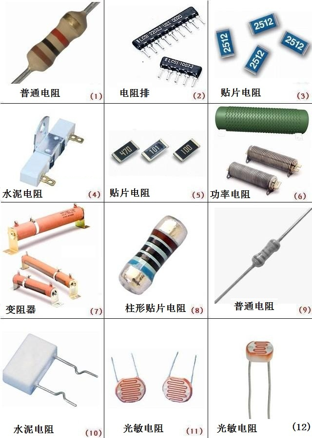↓图1、2、3、4 大功率电阻；图5、6、7、8压敏电阻；图9 线绕陶瓷电阻
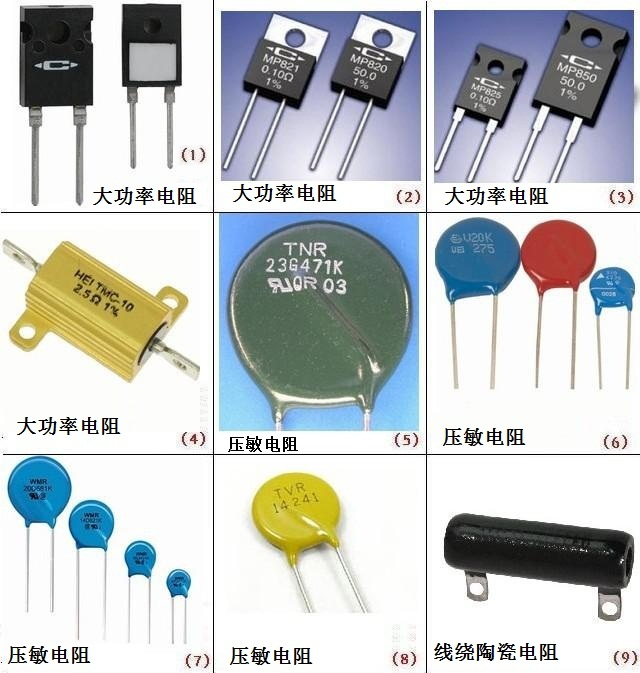 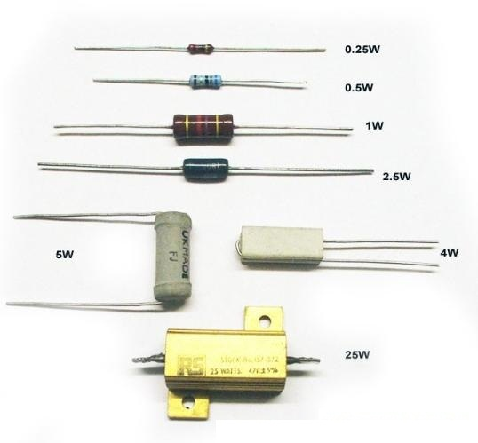可调电阻/微调电阻↓
可调电阻也叫可变电阻（Rheostat），可调电阻的电阻值的大小可以人为调节，以满足电路的需要。
可调电阻按照电阻值的大小、调节的范围、调节形式、制作工艺、制作材料、体积大小等等可分为许多不同的型号和类型，分为：电子元器件可调电阻，瓷盘可调电阻，贴片可调电阻，线绕可调电阻等等。
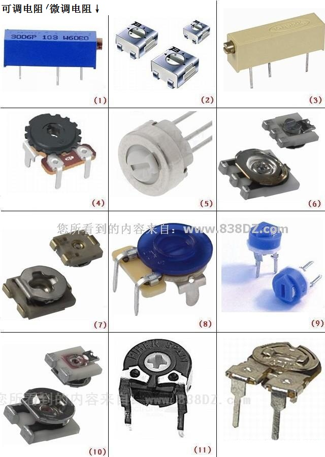 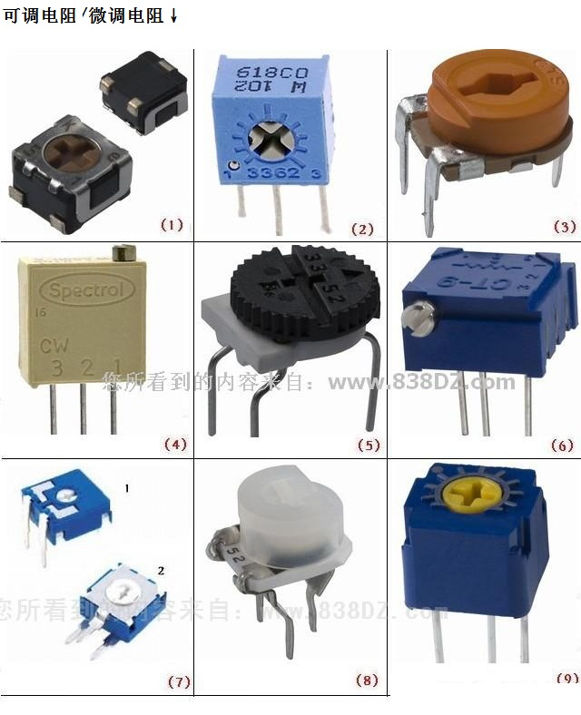 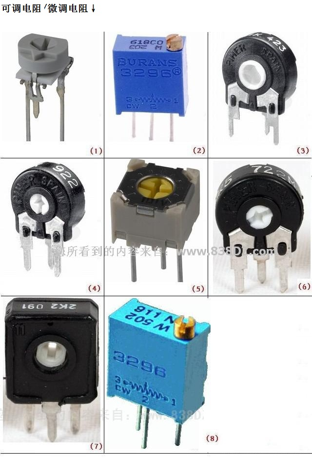二、电位器↓
电位器（Potentiometer）是具有三个引出端、阻值可按某种变化规律调节的电阻元件。电位器通常由电阻体和可移动的电刷组成。当电刷沿电阻体移动时，在输出端即获得与位移量成一定关系的电阻值或电压。
电位器既可作三端元件使用也可作二端元件使用。后者可视作一可变电阻器，由于它在电路中的作用是获得与输入电压（外加电压）成一定关系得输出电压，因此称之为电位器。
↓图1、2、4、6、7、8、11、12基本旋转电位器；
图3线绕电位器；图5、9双联电位器/同步电位器；图10直滑电位器；
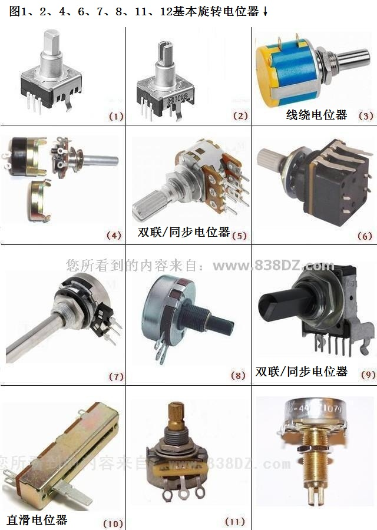↓图1线绕变阻器；图2、4基本旋转电位器；图5多圈电位器
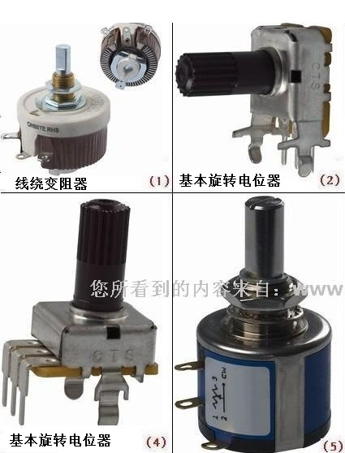三、电容
电容器（capacitor），通常简称其容纳电荷的本领为电容，用字母C表示，单位为F（法拉）。任何两个彼此绝缘且相隔很近的导体（包括导线）间都构成一个电容器。
作用：隔直通交，耦合，旁路，滤波，调谐回路， 能量转换，控制等方面。
↓图1 胆电容；图2 灯具电容器； 图3 MKPH电容；图4 MET电容；图5、10 PEI电容，图6 胆贴片电容；图7 MPE电容；图8 贴片电容；图11 轴向电解电容器；图12 MPP电容
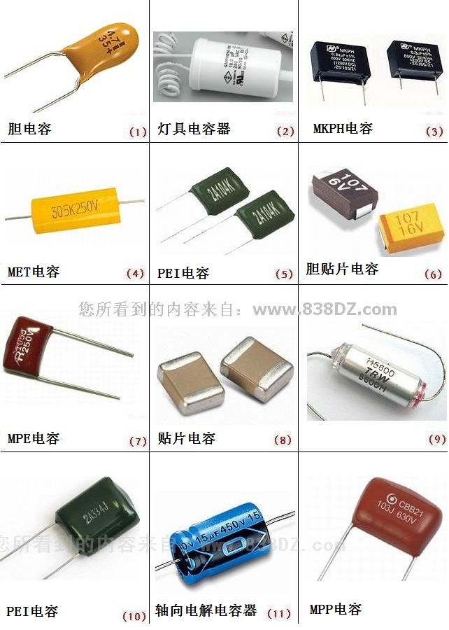↓图1 PPN电容；图2 PET电容；图3 MEA电容；图4 MPB电容；图5 PPT电容；图6 MPT电容；图7 电解电容器；图8 MET电容；图9 MKPH电容；图10、11电机用电容；图12 MKS电容。
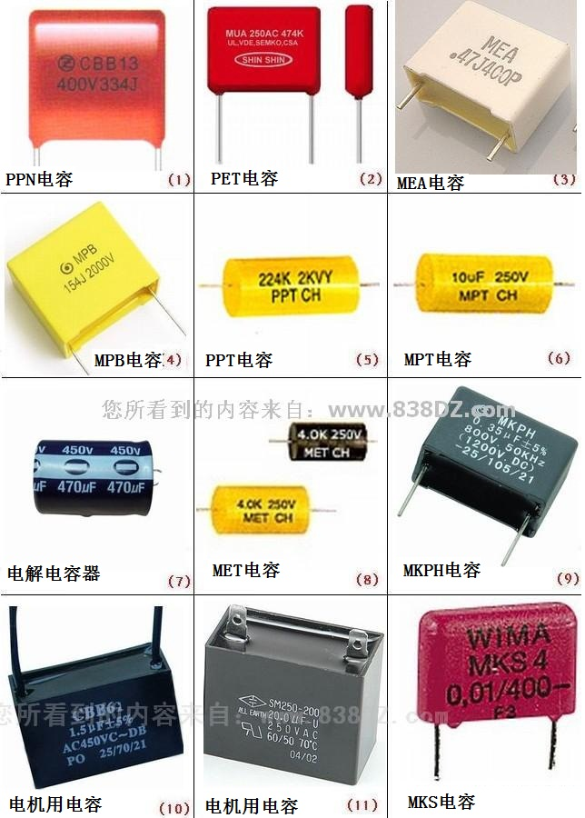↓图1 MKS电容；图2 瓷片电容；图3、4 MKP电容；图5 贴片电解电容；图6 史普瑞电容 Sprague Orange Drop Capacitors；图7 电机用电容；图8 MKT电容；图9 陶瓷电容
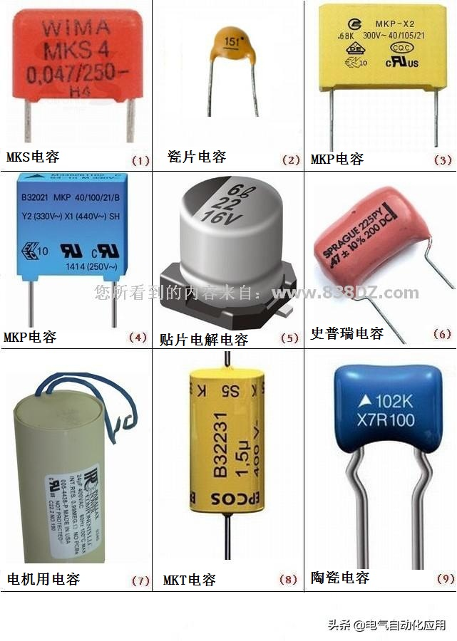↓图1 MKS电容；图3、8 云母电容；图4 MPP电容；图5 MKP电容；图9 MEP电容；图10 MPP电容；图11 PPN电容；图12 PEI电容

↓图1、2、3 陶瓷电容器；图4 色环陶瓷电容；图5、10、11，电机起动及运行电容器；图12 充放电用电容
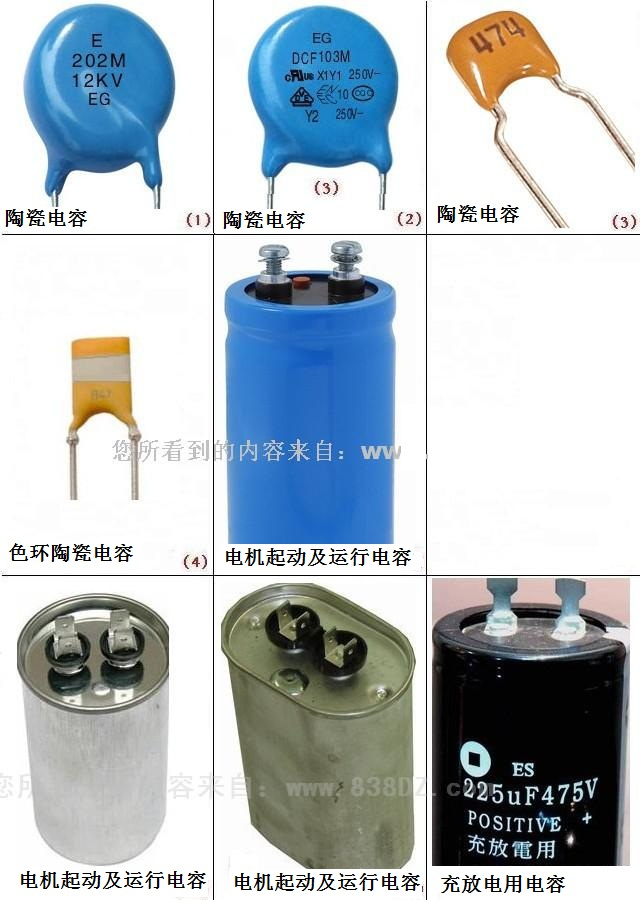↓图1 双连调谐电容；图2 微调电容；图3 四连调谐电容；图4 单连调谐电容
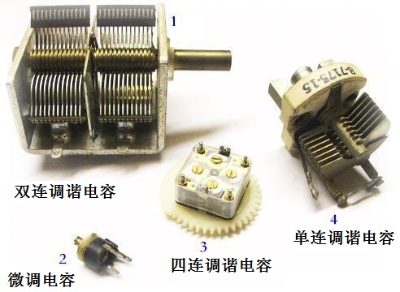四、电感
电感器(Inductor)是能够把电能转化为磁能而存储起来的元件。电感器的结构类似于变压器，但只有一个绕组。电感器具有一定的电感，它只阻碍电流的变化。如果电感器在没有电流通过的状态下，电路接通时它将试图阻碍电流流过它；如果电感器在有电流通过的状态下，电路断开时它将试图维持电流不变。电感器又称扼流器、电抗器、动态电抗器。
电感器的特性与电容器的特性正好相反，它具有阻止交流电通过而让直流电顺利通过的特性。直流信号通过线圈时的电阻就是导线本身的电阻压降很小；当交流信号通过线圈时，线圈两端将会产生自感电动势，自感电动势的方向与外加电压的方向相反，阻碍交流的通过，所以电感器的特性是通直流、阻交流，频率越高，线圈阻抗越大。电感器在电路中经常和电容器一起工作，构成LC滤波器、LC振荡器等。另外，人们还利用电感的特性，制造了阻流圈、变压器、继电器等。
↓图1、4、8 工字形电感线圈；图2、9、10 环形电感；图6 贴片电感；图3、5、7 小型变压器

↓图40 可调电感；图41 中周；图42空心电感；图43色环电感。
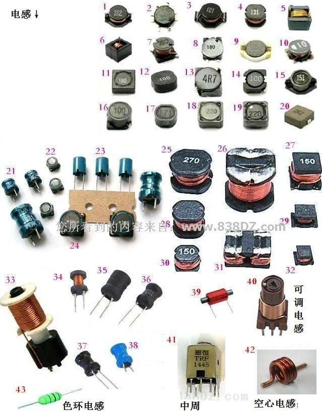五、二极管
二极管（Diode）是一种具有两个电极的装置。二极管最普遍的功能就是只允许电流由单一方向通过（称为顺向偏压），反向时阻断 （称为逆向偏压）。因此，二极管可以想成电子版的逆止阀。而变容二极管（Varicap Diode）则用来当作电子式的可调电容器。大部分二极管所具备的电流方向性我们通常称之为“整流（Rectifying）”功能。
早期的真空电子二极管；它是一种能够单向传导电流的电子器件。在半导体二极管内部有一个PN结两个引线端子，这种电子器件按照外加电压的方向，具备单向电流的传导性。一般来讲，晶体二极管是一个由p型半导体和n型半导体烧结形成的p-n结界面。在其界面的两侧形成空间电荷层，构成自建电场。当外加电压等于零时，由于p-n 结两边载流子的浓度差引起扩散电流和由自建电场引起的漂移电流相等而处于电平衡状态，这也是常态下的二极管特性。
↓图1 一般指高压二极管；图2 汽车发电机用二极管；图3、5 玻璃封装小电流二极管；图4 砷化镓红外发光二极管；图6 激光二极管；图7 双二极管；图8 大电流二极管模块；图9 大电流二极管；图10、11 发光二极管数码管
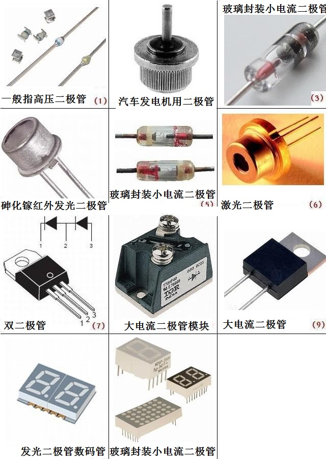↓图1、2、3、4 普通二极管；图5 柱形贴片二极管；图6、7 贴片二极管
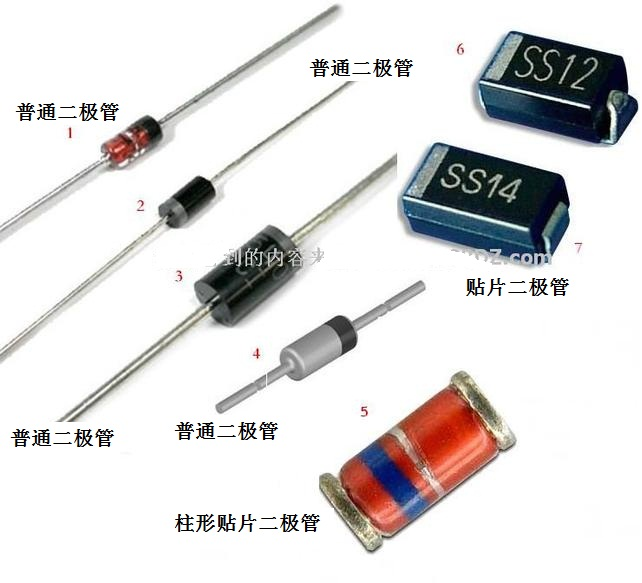↓图1、2、3、4、5螺栓大电流二极管；图7、8、9、10、11辫式螺栓大电流二极管
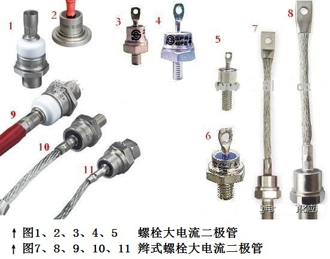↓发光二极管
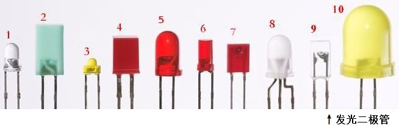六、三极管
三极管，全称应为半导体三极管，也称双极型晶体管、晶体三极管，是一种控制电流的半导体器件。其作用是把微弱信号放大成幅度值较大的电信号， 也用作无触点开关。
三极管是在一块半导体基片上制作两个相距很近的PN结，两个PN结把整块半导体分成三部分，中间部分是基区，两侧部分是发射区和集电区，排列方式有PNP和NPN两种。
↓封装晶体三极管
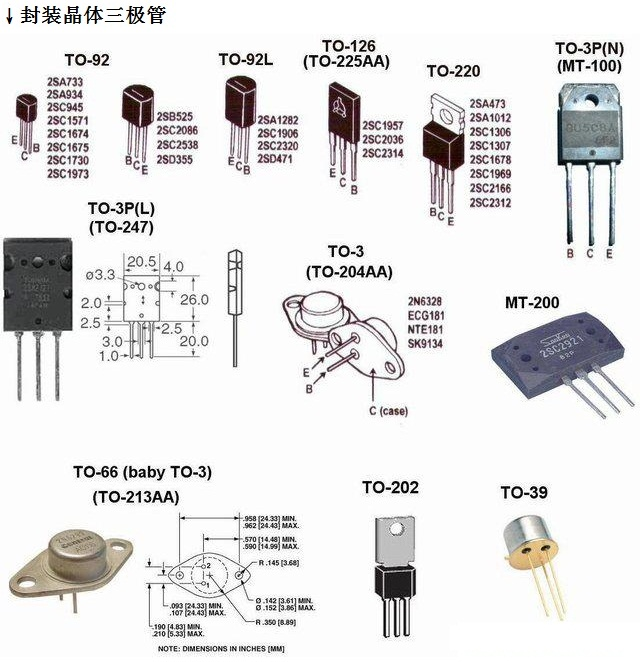 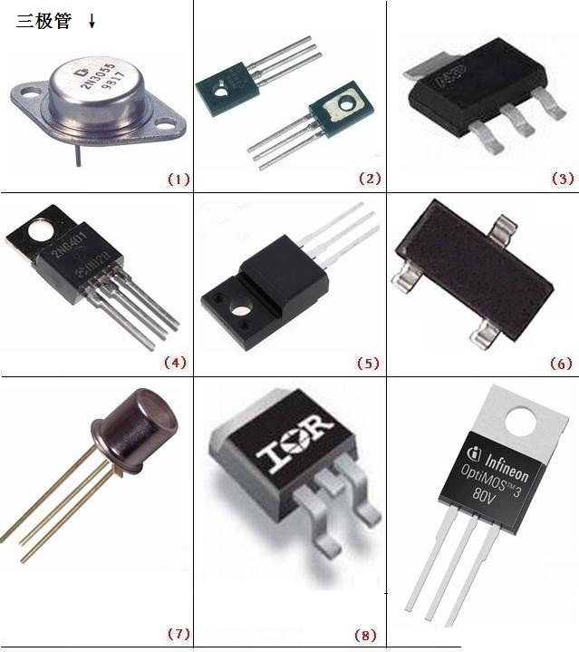注意：有些象第2幅，除图1、7以外，有的是单个二极管或双二极管。使用时要注意。
七、轻触按键开关
轻触按键是按键产品下属的一款分类产品，它其实相当于是一种电子开关，只要轻轻的按下按键就可以是开关接通，松开时是开关就断开连接，实现原理主要是通过轻触按键内部的金属弹片受力弹动来实现接通和断开的。
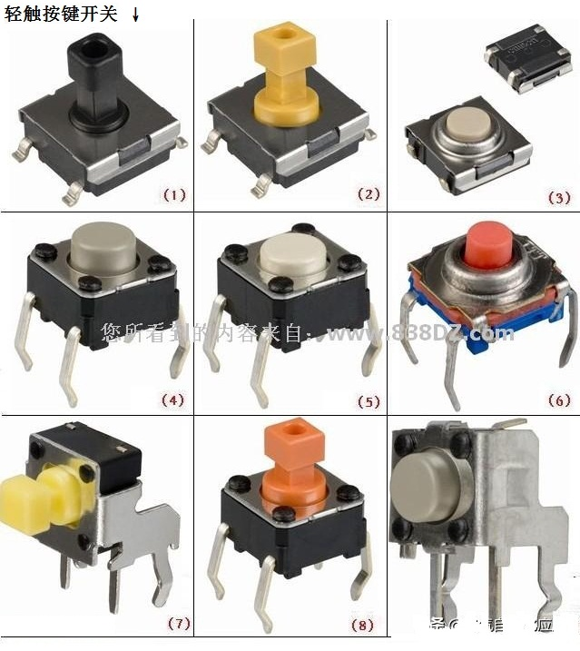↓微动轻触按键开关
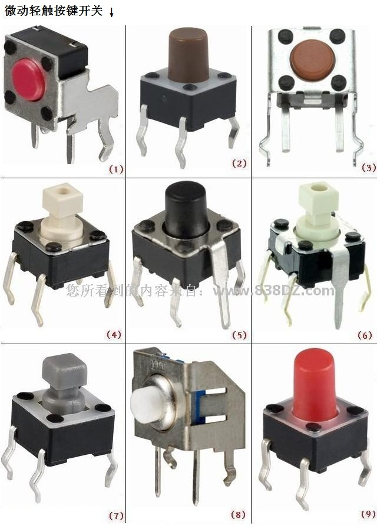
八、微动开关
微动开关是具有微小接点间隔和快动机构，用规定的行程和规定的力进行开关动作的接点机构，用外壳覆盖，其外部有驱动杆的一种开关，因为其开关的触点间距比较小，故名微动开关，又叫灵敏开关、快动开关。用于防盗系统中的门开关等。
↓图1、10、11 簧片微动开关；图2、3、4、5、6、12 基本型微动开关；图7、8、9 簧片滚轮式行程开关
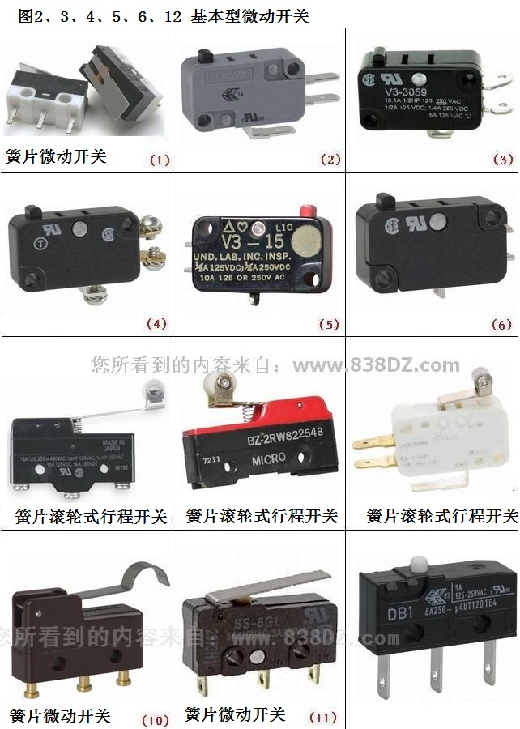↓图1 基本型微动开关；图2、3、5 簧片微动开关；图4、6、7 簧片滚轮式行程开关
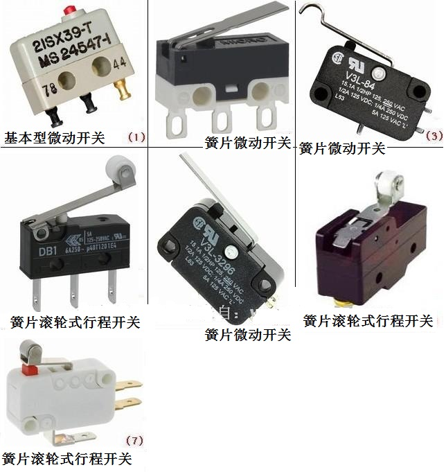↓船型开关/翘板开关
↓图1、2、3、4、5、6、7、8、9、10、11拨码开关/ 编码开关；图12 翘板开关
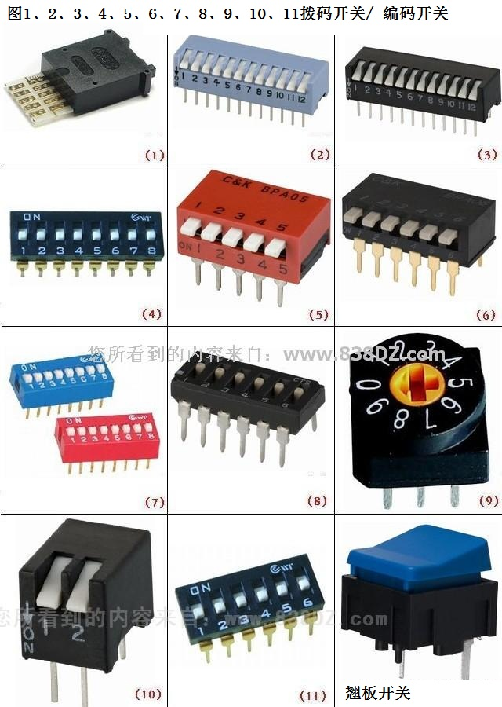↓图1、2、3、4、5船型开关/翘板开关；图6、7、8、9钮子开关
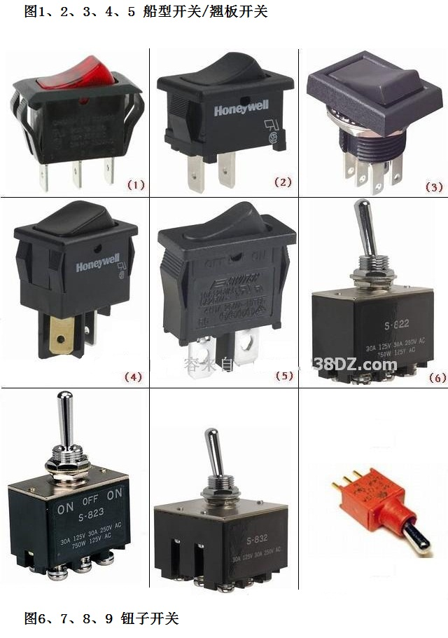↓图1、2、7钮子开关；图3、6、9、10滑动开关；图4、5翘板开关
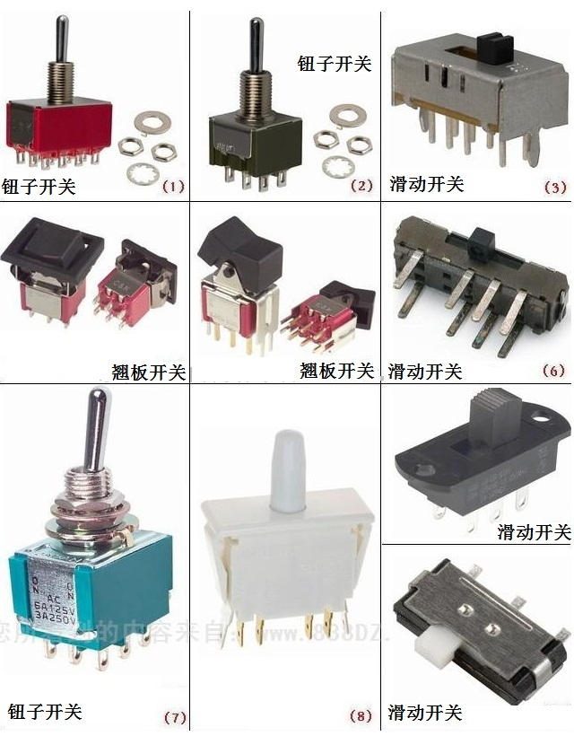九、温度开关
温度开关是一种用双金属片作为感温元件的温度开关，电器正常工作时，双金属片处于自由状态，触点处于闭合/断开状态，当温度升高至动作温度值时，双金属元件受热产生内应力而迅速动作，打开/闭合触点，切断/接通电路，从而起到热保护作用。当温度降到重定温度时触点自动闭合/断开，恢复正常工作状态。广泛用于家用电器电机及电器设备，如洗衣机电机、空调风扇电机、变压器、镇流器、电热器具等。
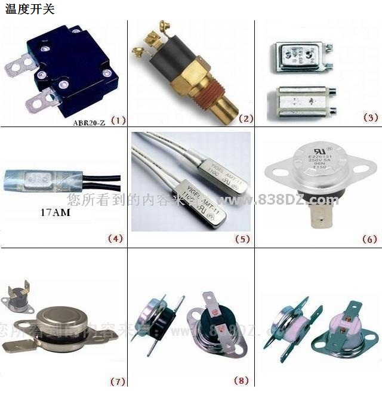 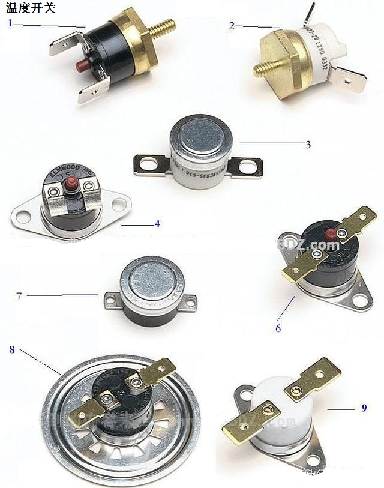十、继电器
继电器（relay）是一种电控制器件，是当输入量（激励量）的变化达到规定要求时，在电气输出电路中使被控量发生预定的阶跃变化的一种电器。它具有控制系统（又称输入回路）和被控制系统（又称输出回路）之间的互动关系。通常应用于自动化的控制电路中，它实际上是用小电流去控制大电流运作的一种“自动开关”。故在电路中起着自动调节、安全保护、转换电路等作用。
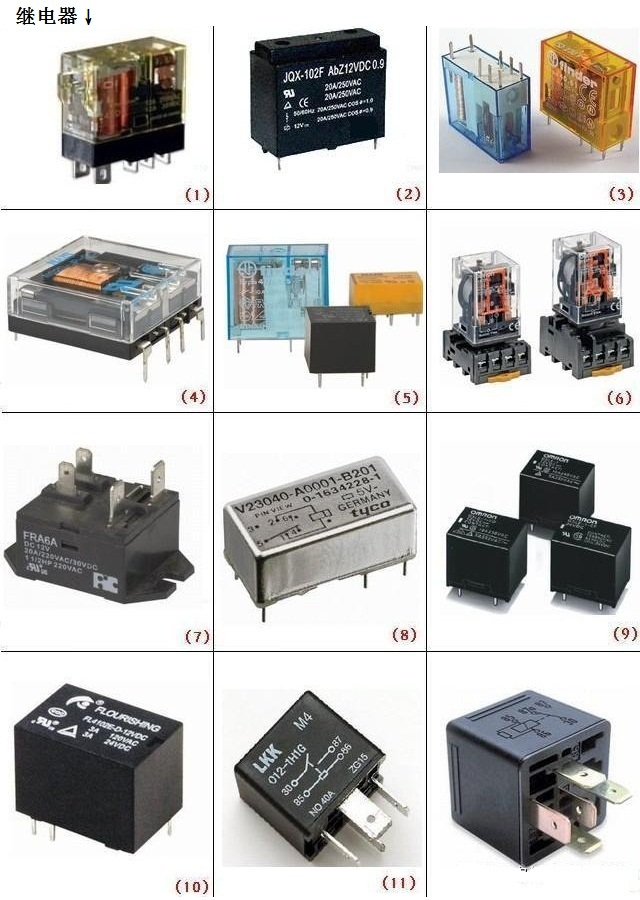 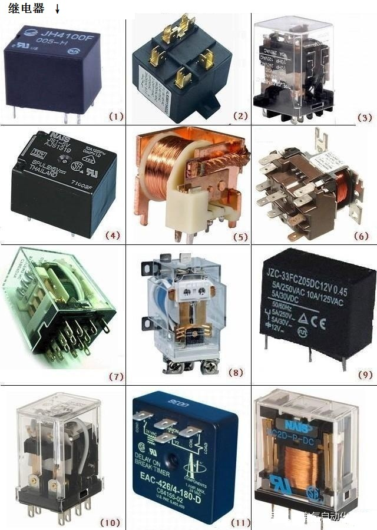十一、温度保险丝
温度保险丝也叫做热熔断体，是温度感应回路切断装置。温度保险丝能感应电器电子产品非正常运作中产生的过热，从而切断回路以避免火灾的发生。常用于：电吹风、电熨斗、电饭锅、电炉、变压器、电动机、饮水机、咖啡壶等，温度保险丝运作后无法再次使用，只在熔断温度下动作一次。
↓图1、2、3 温度保险丝；图4、5 塑壳封装保险丝；图6 保险丝管；图7 陶瓷管保险丝；图8 玻璃管保险丝
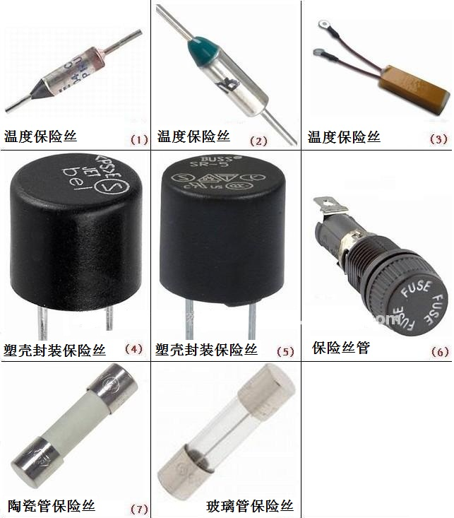十二、可控硅
可控硅(Silicon Controlled Rectifier) 简称SCR，是一种大功率电器元件，也称晶闸管。它具有体积小、效率高、寿命长等优点。在自动控制系统中，可作为大功率驱动器件，实现用小功率控件控制大功率设备。它在交直流电机调速系统、调功系统及随动系统中得到了广泛的应用。
可控硅分单向可控硅和双向可控硅两种。双向可控硅也叫三端双向可控硅，简称TRIAC。双向可控硅在结构上相当于两个单向可控硅反向连接，这种可控硅具有双向导通功能。其通断状态由控制极G决定。在控制极G上加正脉冲(或负脉冲)可使其正向(或反向)导通。这种装置的优点是控制电路简单，没有反向耐压问题，因此特别适合做交流无触点开关使用。
↓图1、2、4、12、13 小功率可控硅/晶闸管；图3、9 平板式大功率可控硅/晶闸管；图5、6、7 大功率可控硅/晶闸管；图8、11 可控硅模块

十三、声表面滤波器
声表面滤波器是在一块具有压电效应的材料基片上蒸发一层金属膜，然后经光刻，在两端各形成一对叉指形电极组成。当在发射换能器上加上信号电压后，就在输入叉指电极间形成一个电场使压电材料发生机械振动（即超声波）以超声波的形式向左右两边传播，向边缘一侧的能量由吸声材料所吸收。在接收端，由接收换能器将机械振动再转化为电信号，并由叉指形电极输出。
晶体谐振器就是指用石英材料做成的石英晶体谐振器，俗称晶振。起产生频率的作用，具有稳定，抗干扰性能良好的特点，广泛应用于各种电子产品中。
↓晶体谐振器
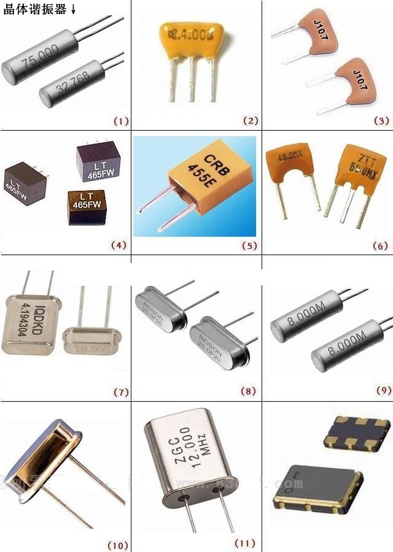↓图3、4、5、6、7晶体振荡器
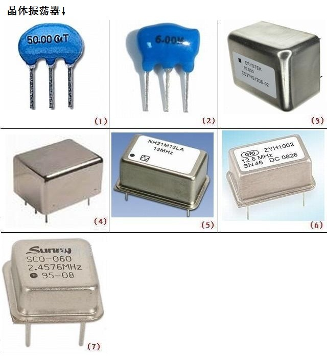 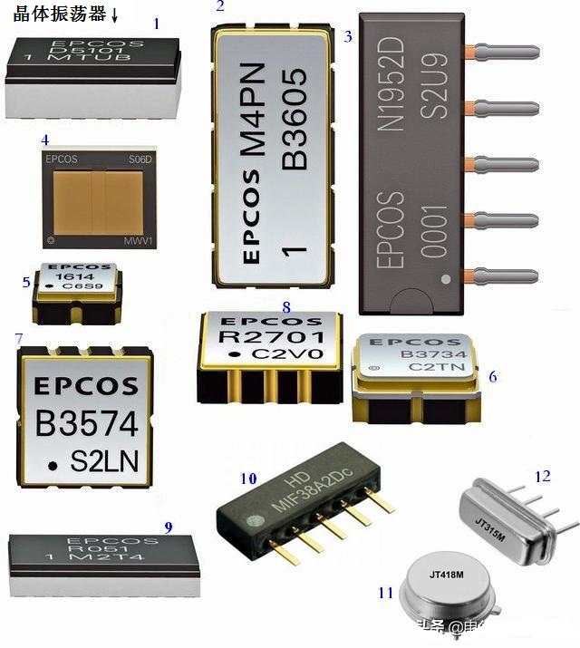十四、桥式整流二极管
桥式整流即桥式整流器（Bridge Rectifiers），也叫做整流桥堆，是利用二极管的单向导通性进行整流的最常用的电路，常用来将交流电转变为直流电。
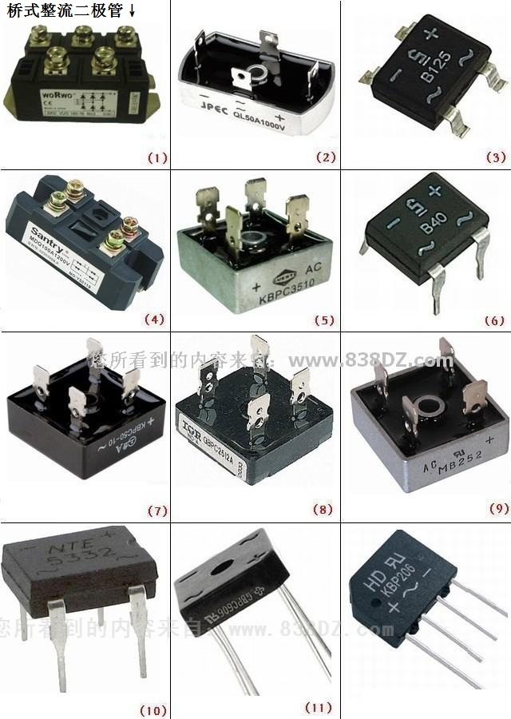三相桥式整流器
↓图6 三相桥式整流二极管
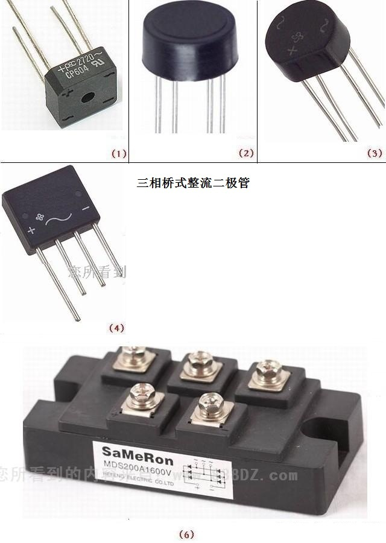十五、光电器件
光电器件是指根据光电效应制作的器件称为光电器件，也称光敏器件。光电器件的种类很多，但其工作原理都是建立在光电效应这一物理基础上的。光电器件的种类主要有: 光电管、光电倍增管、光敏电阻、光敏二极管、光敏三极管、光电池、光电耦合器件。
↓图1、2、3、4、5 光电藕合器；图6、7、8 红外线接收器/接收头；图9、10、11、12 光遮断器
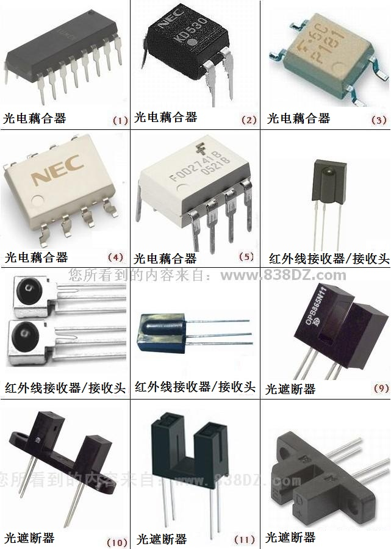↓图1、2、3、4 光电三极管；图5 红外线发射管
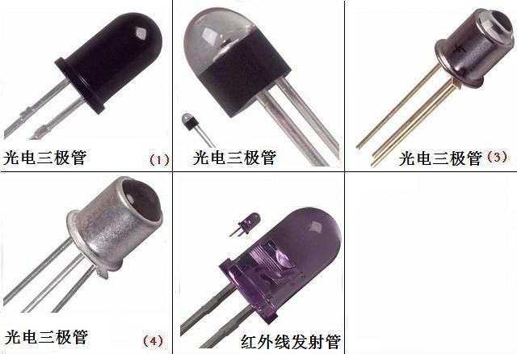湿度/热释红外线/霍尔传感器
↓图1、2、3 湿度传感器；图4、5 热释红外线传感器；图6、7、8、9 霍尔传感器/霍尔元件
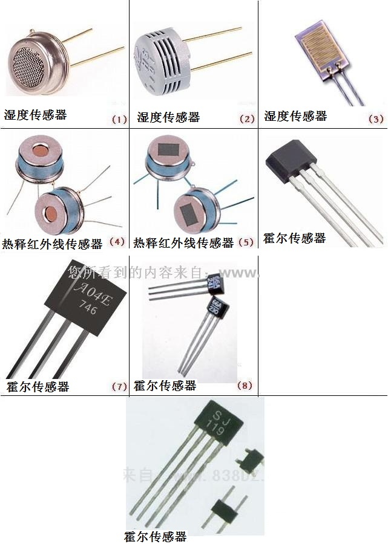热敏电阻
↓图1、2、3 热敏电阻温度传感器；图4、6、7、8、9、10 树脂封装热敏电阻；图5 玻璃封装热敏电阻；图11 二极管形热敏电阻
 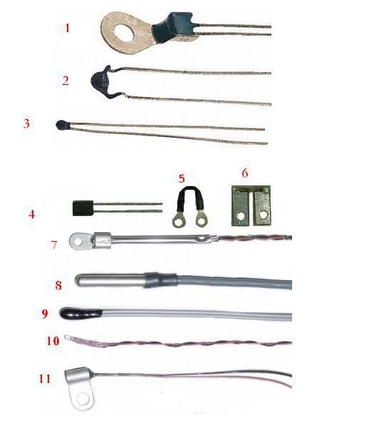
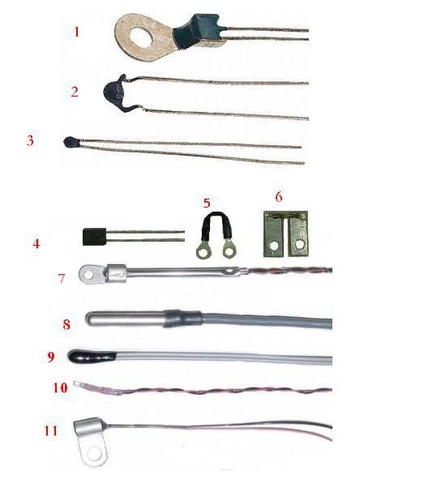
十六、电子元器件符号图形
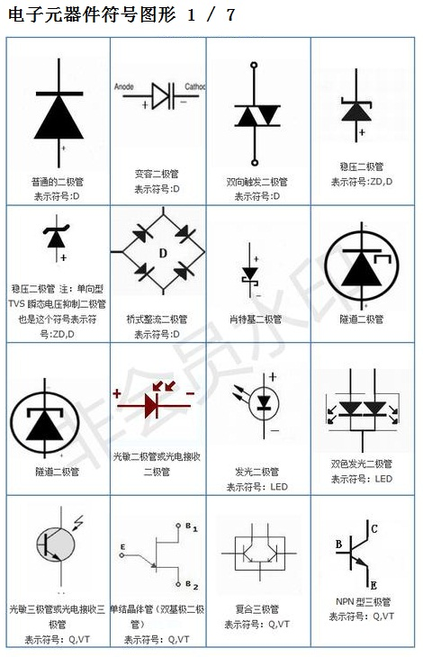 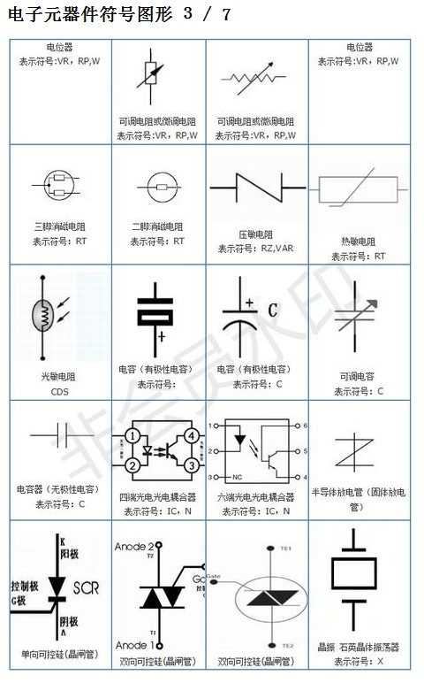
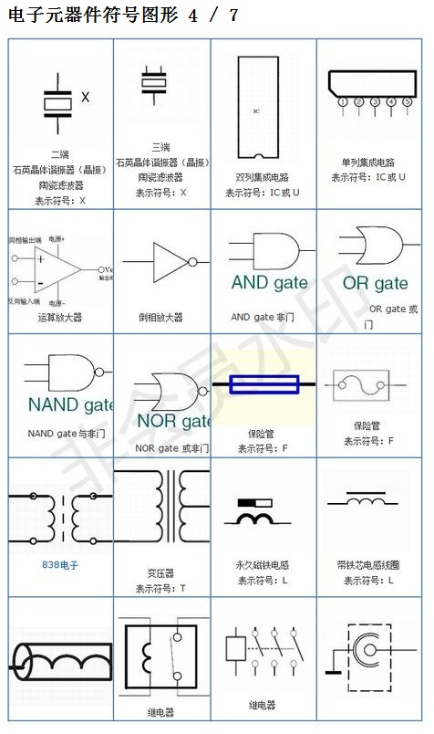
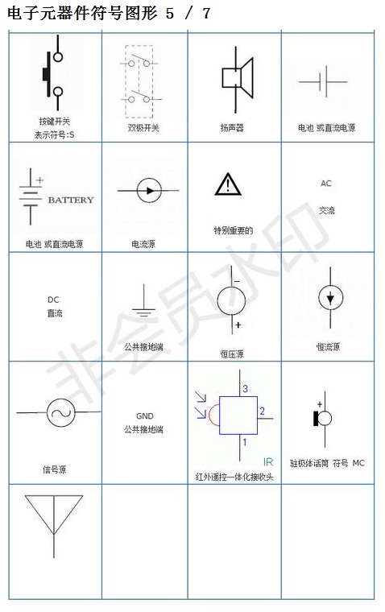
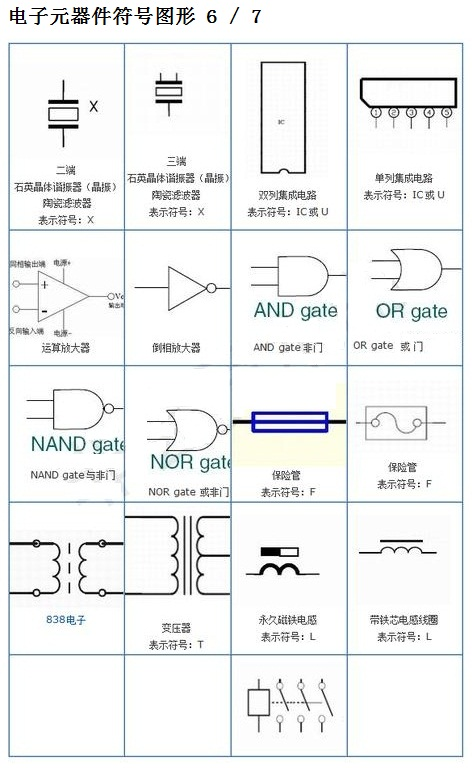
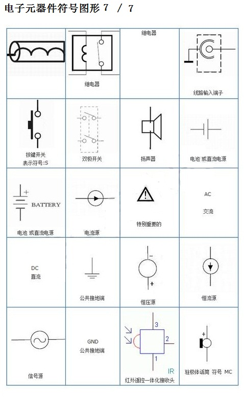
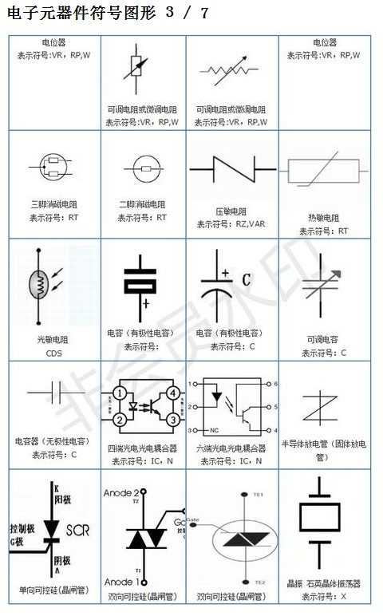
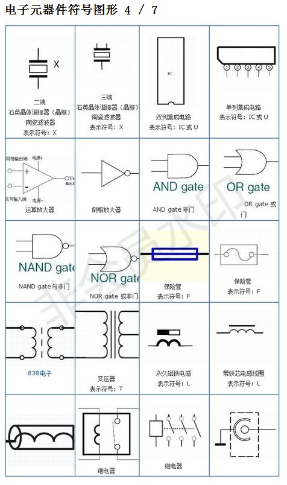


